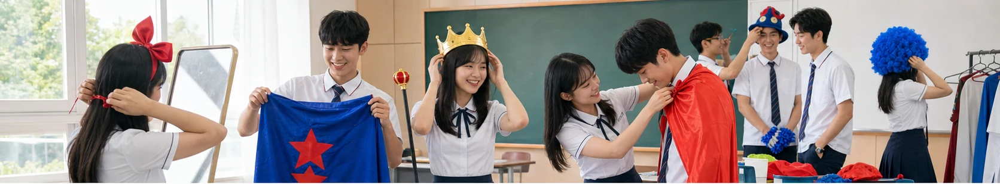
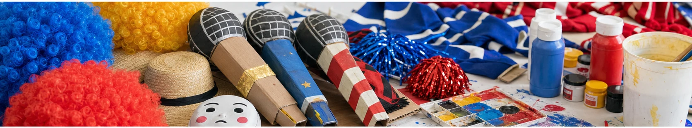
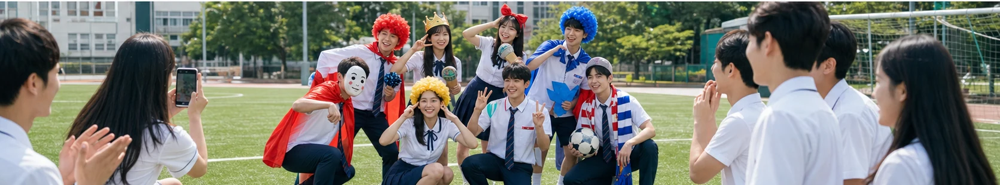

올해도 돌아온 ‘졸업사진 맛집’, 의정부고 패러디의 힘
한 해의 인물과 유행을 기발하게 재현하는 의정부고 졸업사진이 올해도 네이버 뉴스에서 화제가 됐다. 학생들이 직접 의상과 소품을 준비해 사회적 장면과 대중문화의 순간을 패러디하는 전통은 이제 졸업 시즌의 대표 콘텐츠가 됐다. 사진 한 장만 보아도 그해 사람들이 무엇을 보고 웃고 이야기했는지 떠올릴 수 있다는 점이 인기의 바탕이다.
좋은 패러디는 비슷하게 꾸미는 데서 끝나지 않는다. 원본의 핵심 포즈와 표정, 상징적인 소품을 빠르게 알아볼 수 있도록 압축하고, 학생들만의 엉뚱한 재료와 상황을 더해야 한다. 값비싼 의상보다 색종이, 골판지, 체육복처럼 손에 잡히는 재료가 오히려 유머를 살린다.

준비 과정은 작은 제작 프로젝트에 가깝다. 아이디어를 고르고 역할을 나누며 소품을 만들고, 촬영 당일의 동선과 안전까지 맞춰야 한다. 친구의 장점을 살려 배역을 정하고 실패한 시안을 함께 고치는 과정은 완성된 사진에 보이지 않는 중요한 추억이 된다. 결과보다 협업의 시간이 졸업사진의 진짜 의미일 수 있다.
유명세가 커진 만큼 지켜야 할 선도 분명하다. 특정 개인의 외모나 약점을 조롱하거나, 재난과 피해자의 고통을 가벼운 웃음으로 소비해서는 안 된다. 저작권이 있는 캐릭터나 상표를 상업적으로 이용하지 않고, 학교 구성원 모두가 불편하지 않은지 사전에 확인하는 태도가 필요하다.
패러디는 당대의 기록 방식이기도 하다. 뉴스의 긴 설명보다 한 장의 이미지가 시대의 분위기를 더 선명하게 남길 때가 있다. 몇 년 뒤 사진을 다시 보면 유행이 낯설게 느껴지면서도, 당시의 말투와 음악, 스포츠 장면이 한꺼번에 되살아난다. 졸업 앨범이 개인의 성장 기록을 넘어 작은 연감이 되는 순간이다.

학교에서 비슷한 촬영을 준비한다면 먼저 모든 참여자의 동의를 확인해야 한다. 사진이 학교 앨범에만 들어가는지, 공식 사회관계망에 공개되는지에 따라 초상권의 범위가 달라진다. 촬영을 원하지 않는 학생에게 불이익이 없도록 대체 콘셉트와 별도 촬영 시간을 마련하는 것도 필요하다. 소품은 시야를 가리거나 움직임을 방해하지 않는지 점검하고, 운동장에서는 더위와 미끄럼 사고에 대비해야 한다. 아이디어 회의 때 ‘누가 웃음의 대상이 되는가’를 질문하면 조롱과 풍자의 차이를 찾는 데 도움이 된다. 교사는 학생의 창의성을 지나치게 통제하기보다 안전과 존중의 기준을 함께 세우는 조력자가 될 수 있다. 그렇게 만든 사진은 인터넷 반응보다 친구들 사이의 신뢰를 먼저 지키게 된다.
화제의 속도가 빠를수록 정보의 날짜와 출처를 확인하는 습관이 중요하다. 검색 결과의 제목만 보지 말고 공식 발표와 원문을 함께 살피며, 예고 단계의 내용과 확정된 사실을 구분해야 한다. 개인의 짧은 후기나 영상은 현장감을 주지만 전체 상황을 대표하지는 않는다. 서로 다른 관점을 비교하고 새 공지가 나오면 판단을 업데이트하자. 관심을 표현할 때도 당사자의 개인정보와 초상권, 아직 공개되지 않은 내용을 존중해야 한다. 빠르게 공유하는 것보다 정확하고 배려 있게 이해하는 태도가 결국 더 좋은 팬 문화와 공론장을 만든다.
한편 검색량이 높다는 사실이 곧 가치나 완성도를 뜻하는 것은 아니다. 화제가 시작된 배경과 사람들이 반응한 이유를 차분히 나누어 보면 유행을 더 입체적으로 읽을 수 있다. 서로 다른 취향과 경험을 존중하고, 확인되지 않은 내용을 단정하거나 과장된 표현으로 갈등을 키우지 않는 것도 중요하다. 오늘의 인기 키워드를 잠깐 소비하는 데서 그치지 않고 우리 생활과 문화에 어떤 변화를 남기는지 지켜볼 때 이야기는 더 풍성해진다.
의정부고 졸업사진이 매년 기대를 모으는 이유는 완벽함보다 학생들의 주도성과 재치가 보이기 때문이다. 누가 더 닮았는지를 겨루는 대신, 서로 웃고 기억할 수 있는 장면을 만드는 것이 핵심이다. 올해의 사진도 인터넷의 짧은 화제를 지나 학생들에게 오래 남을 공동 작품이 될 것이다.